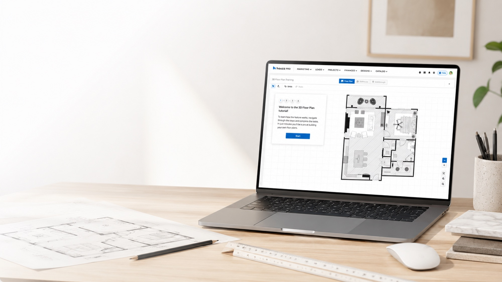
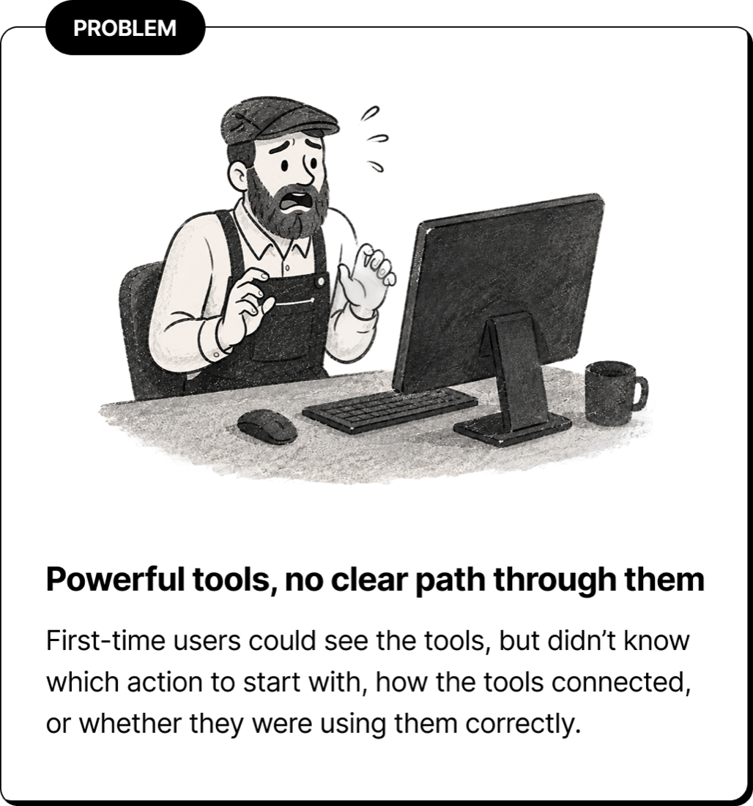
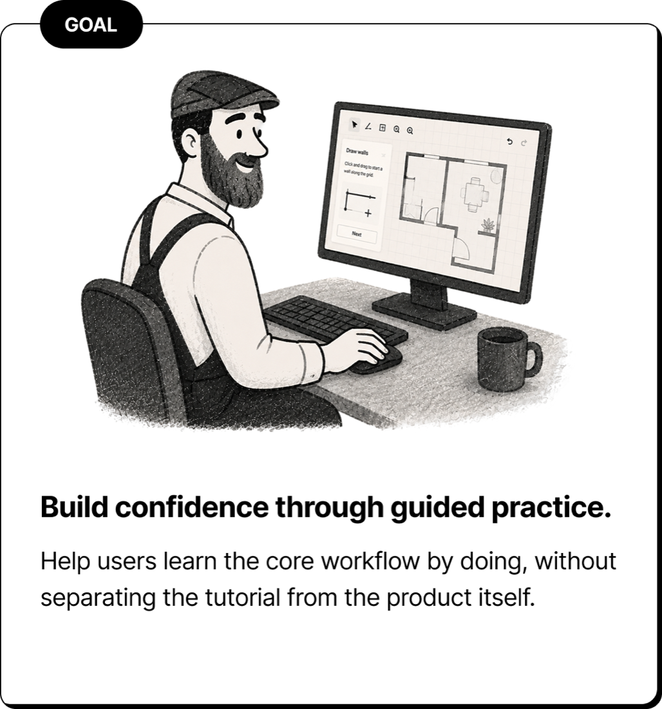
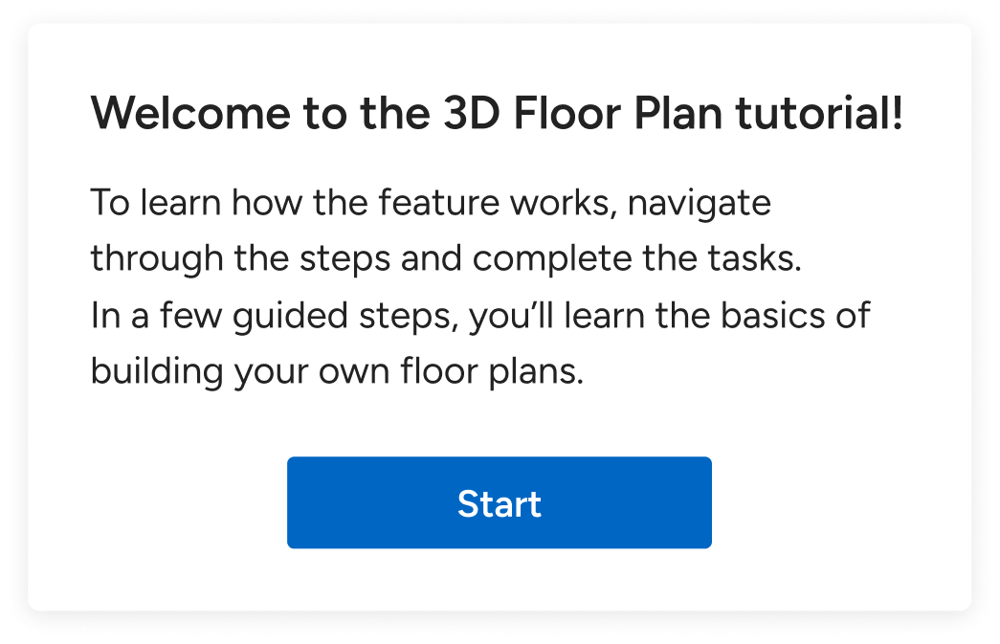
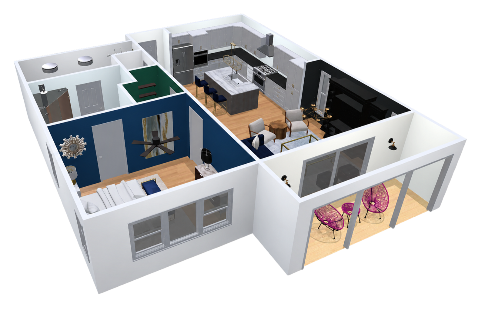
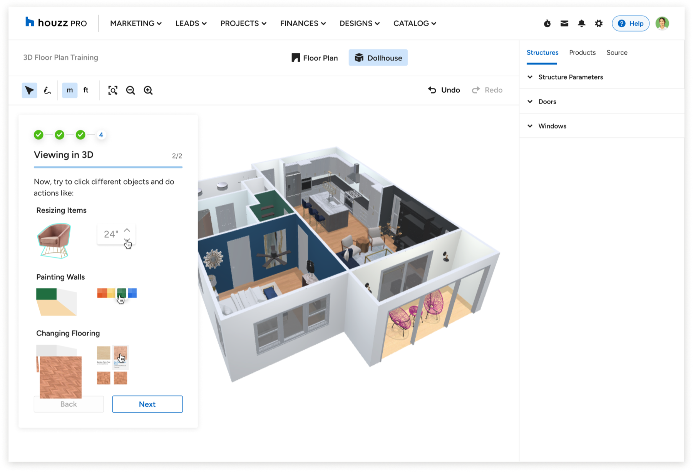
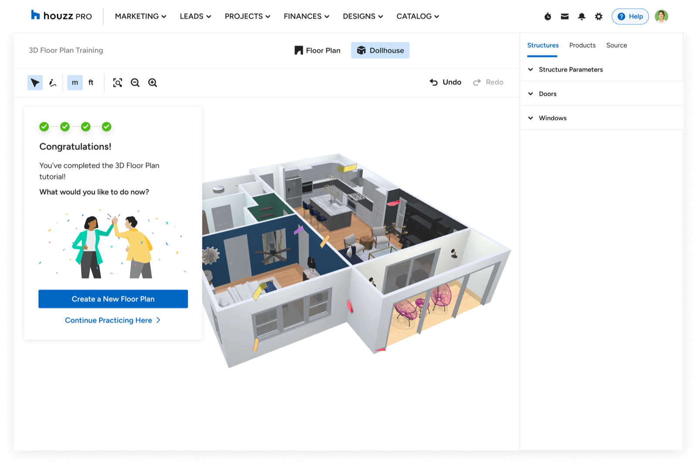

Helping first-time users learn the workspace through guided practice.
3D Floor Plans offered a powerful set of tools, but for a first-time user, the blank workspace made it difficult to know where to begin. Onboarding mattered because users needed more than an introduction to individual features - they needed a clear path to completing a first plan and enough confidence to continue working on their own.

Role / Product DesignerScope / Concept exploration, task sequencing, interaction design, detailed statesPlatform / Desktop web


The challenge wasn't finding a tool - it was knowing what came next
In first-time use, the main friction wasn't individual feature discovery. Users needed help understanding the sequence: where to begin, what to do next, and whether they were on the right track.
Where onboarding should live
I explored four approaches with the team, evaluating each against three needs: keeping users in context, supporting hands-on practice, and working across both 2D and 3D.
Four-approaches comparison - original treatment pending approval
Tooltip · Wizard · One-pager · Sidebar (selected) - to be designed in the visual system
The core tradeoff: the lighter options shipped faster but pulled users away from the canvas. The sidebar took more investment, but kept learning in context - users could apply each instruction directly on the canvas instead of translating guidance from a separate surface into the workspace.
With the sidebar chosen, the question shifted from where guidance should live to how the practice itself should unfold - what users would do first, and in what order.
The design - a guided practice space
The selected direction became a guided practice environment inside the real workspace - low-risk enough for experimentation, but close enough to the product to build transferable skills. Rather than opening onto the full workspace at once, it gave users one obvious first action to start from.
At a glance · Orient → Create → Add items → Review

The welcome step sets one clear first action.

Practice happens inside the real workspace.
The four stages
The sequence was designed to build confidence one layer at a time. Users first needed to understand how to move around the workspace, select objects, and recover if they got lost - only then did it make sense to ask them to create a room.
Once the basic structure existed, adding items had a clear context rather than feeling like another disconnected tool to learn. The tutorial ended in 3D because Review was both validation and payoff: users could see that the actions they'd just learned had produced a coherent, spatial result.
Introducing creation or furnishing too early would have added complexity before users had the basic control to understand or correct what they were doing. Each stage prepared them for the next - from control, to creation, to detail, and finally to understanding the complete plan.
01Orient - establish control
Before asking users to build anything, we gave them a low-risk way to understand movement, zoom, and orientation, then selecting and moving an existing object - so users understood how the workspace behaved before creating anything new. Orient came first by design: these actions were reversible and low-risk, giving users room to get comfortable navigating and selecting before they were asked to create or change the plan.
02Create - draw a room
Once users could navigate and manipulate the canvas, the tutorial introduced the pen tool and asked them to create a room point by point. Design principle: control first, creation second.
03Add items - structures, products, source
The side menu was introduced in a deliberate sequence: Structures for the architectural shell, Products for quick placeholders, and Source for real marketplace items. Inline feedback corrected mistakes while keeping the next step available - feedback, not failure states: a misplaced item suggested a correction without preventing the user from continuing.
04Review - see it in 3D
After users learned the core planning actions, the tutorial introduced Dollhouse mode - turning the plan from a flat workspace into a spatial environment they could inspect and refine. Design principle: reveal the payoff after users understand the fundamentals.

The spatial payoff. (Flat-plan → Dollhouse transition shown as stills for now; motion asset pending.)
Built for real working sessions
Because onboarding had to fit around real work, users needed to be able to pause, return, and complete it without losing their progress - then move naturally from practice into the actual product.
Stop-and-resume. Users didn't always complete the tutorial in one session, so progress was saved automatically and surfaced again when they returned - they could leave without losing progress and resume from their exact spot.
Completing the onboarding. The final step reinforced completion while keeping momentum: users could either start a new floor plan or continue practicing in the same workspace.
Leave without losing progress.Return to the exact spot.

Completion that leads back into real work.
Outcome
The onboarding made the canvas feel learnable: the tutorial taught a workflow, not a list of features - gain control, create, add detail, and review the result in 3D.
Following the rollout, more first-time users reached a completed floor plan. The result suggested that the onboarding experience was supporting users through the early learning curve by giving them a structured path to practice the core workflow before applying it in their own work.
Learnings
I came away believing that onboarding a complex tool shouldn't begin with explaining everything it can do - it should give users a clear sequence of actions that leads to one meaningful result.
People build confidence by doing the work in context, seeing the effect of each action, and understanding how one step prepares them for the next. Good onboarding teaches the shape of the workflow, not just the location of the tools - so by the time the guidance ends, users have already experienced enough of the product to keep working without the tutorial.